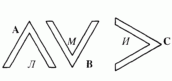
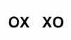
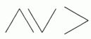

Беседа 2323 от 3877 · Беинса Дуно
Двете силни точки
„Отче наш"
Имате ли зададена тема? (Не.)
„Махар Бену Аба"
Ще прочета Шейсет и трети псалом.
Вие приличате на пътници, които чакате последният трен да тръгне. От какво произтичат противоречията в живота? Когато човек държи две противоположни мисли или две противоположни желания, ражда се едно трето състояние. Противоположностите, това са състояния не за децата, но за най-умните хора в света. Някой път вие си играете с тия състояния и не можете да ги издържите. Децата не трябва да си играят с тях.
У вас има желание хората да говорят за вас. Било е време, когато не ви е идвало наум да говорят хората за вас. Но сега няма някой, комуто да не е идвало наум да поговорят хубави работи хората за него. Една майка казва на сина си: „Синко, няма да станеш човек. За тебе никой нищо не говори." Един ден той се напил, направил голяма пакост и вестниците писали за него. Синът казал: „Виж, мамо, заговориха. Вестниците пишат за мене." Това са сравнения. Много пъти ние привеждаме един пример, втори, трети, четвърти. Примерите обясняват, но трябва една философия на живота.
Имате едно неразположение на духа и не можете да се освободите от него. Може да сте много набожен човек, може да сте много добър човек, но имате едно неразположение. В дадения случай вие изучавате геометрия и казвате така: две линии, които се пресичат, образуват един ъгъл. Обаче това може да е една перспектива. Ако две успоредни линии вие ги турите в пространството, то те някъде ще се пресекат - ще изглеждат, че се пресичат. Тогава вие имате една крива представа за тия две успоредни линии. Гледате на тия две линии от ваше гледище, че в далечината образуват един триъгълник, и казвате, че те се пресичат. И много пъти, като разглеждате нещата отдалече, имате едно понятие, а пък като ги разглеждате отблизо - друго понятие.
Всичкото противоречие седи в това, че хората много пъти гледат нещата отдалеч. Отдалеч крадците трябва да предвиждат, а пък отблизо - праведните. Казвате: „Голяма мъдрост е да се предвижда отдалеч." Направили сте някоя беля. Отдалеч трябва да предвидите, че ще ви уловят. Направили сте едно добро. Отдалеч какво ще го разглеждате? Отблизо ще го разглеждате. Хубавите работи отблизо се гледат, а пък лошите работи - отдалеч. Питам ви: това като знаете, какво спечелихте? Кое е по-хубаво, да си фантазирате, че се намирате пред някоя каса, или да си имате едно наполеонче в джоба? Близките неща са едно реално нещо, което можете да опитате, [то] струва повече, отколкото далечните фантазии. Например вие искате някой път да бъдете добър. Това е фантазия. Друг път имате фантазията да бъдете праведен, да бъдете талантлив, да бъдете гениален. Въобразявате си ги, те са далечни работи. Но в дадения случай какво можете да бъдете, то е важно.
Да допуснем, че едно дете е ревнало в коритото, вдига шум, и майката мисли, прави усилия да го умири, люлее го, залъгва го. Люлее го ту на едната страна, ту на другата страна. Отде й дошло на ума в коритото да го люлее? И това дете някой път утихва. Питам: защо децата, като ги люлеят в люлка, утихват, а пък като не ги люлеят, не утихват. Тогава можете ли да кажете кой е първият праотец на коритото, и какво е било първото корито в света? Първото корито, с което вие сега си служите? Една лодка, един съвременен параход има формата на корито. Щом говорим за параход, отиваме далеч, до неща по-малко свързани с въпроса. Това корито как сте го направили? Отсекли сте някое дърво - взет е животът - и от отсеченото дърво сте направили корито. И това дете го турят в коритото. Защо детето плаче в коритото? Защото то усеща, че е ограничено. Плаче синът: „Един ден и мене тъй ще направите." А пък майката казва: „Не. Един ден няма да направят тъй с тебе." Добре, помислете, че имате две деца в едно корито. Колко време две деца могат да живеят в едно корито, да се вместят? До колко години? В такова доста големичко корито, в което си перете дрехите. За колко години две деца могат да се вместят вътре в коритото? Представете си, че това корито има един метър дължина и шейсет сантиметра широчина. Аз вземам размерите произволно. Две деца колко години могат да живеят в него? Щом има две деца, майката ще бъде един ден заставена да извади едното или двете деца из коритото навън.
Някой път нам ни е жалко да напуснем някои стари идеи. Например имате навика да се почесвате - като се кажат някои важни работи, да се почесвате. (Учителят се почесва зад ухото и после си туря дясната ръка на кръста.) И после си туряте ръката така и почнете да мислите. Питам, без да се почесвате не може ли? Почесването, това е език. Трябва да го преведете. Това е класически език, класическа дума. И не туря само пръстите си, но няколко пъти ще каже с пръстите си така. (Учителят се почесва зад ухото.) Как ще се преведе думата „почесване"? Дадат на човека някоя работа и той казва: „Ако не мога да свърша тая работа?" Това е почесване. Той мисли, мисли и казва: „Не искам тая работа, тя не е за мене." Някой път ви дойде на ума да се молите, но пак се почесвате. И в молитвата има почесване. „Чакай да се помоля. Но дали Господ ще ме послуша днес? Хайде, няма да се моля, тая работа не е за мен." И оставяте. Казвате: „Ако аз се помоля, и Господ не ме послуша?" Това е почесване. Ако Господ не ви слуша, защо трябва да отложите? Вие сам предлагате в себе си да се молите. Кой ви накара, та после отлагате? Кои са основните подбуждения? Кое ви накара сега да се молите и кое ви накара после да отлагате? Мислите, че Господ няма да ви послуша. Кои са основните причини, за да не ви послуша Господ?
Щом влезеш в един дом и мислиш, че няма да те приемат, коя е причината, че няма да е приемат? Отива един българин с празни ръце при лекаря. Лекарят му казва: „Зает съм. Нямам време. Друг път елате." Втори път идва българинът и носи един голям пуяк - турил го на рамо. „Нося ви го дар" - казва той. „Добре дошъл. Имам време" - казал лекарят. Лекарят българина ли приел, или пуяка? Пуякът препоръчва българина. Ако има пуйка на рамо, лекарят може да го приеме, ако няма, не го приема. Хубаво, за да влезете при Господа, какво трябва да имате, какво трябва да носите? Все трябва да носите нещо. За да ви приемат някъде, трябва да носите нещо, и когато отидете при Господа, трябва да носите някакъв дар. Без дар никъде няма да ви приемат. Без дар да ви приемат, това са изключения. При Господа ще носите нещо. И като видят пуяка на рамото ви, заради него вратата ще ви бъдат отворени.
Аз вземам сега един пример, който може зле да се тълкува. Казвате: „В Царството Небесно до отиваш и пуяк да носиш - някоя добродетел ще е това." Какво нещо е добродетелта? Съгласен съм, но какво нещо е добродетелта? Каква е вашата идея за добродетелта, как ще я опишете? За доброто донякъде зная, но за добродетелта и досега не мога да си представя какво нещо е тя. По някой път, когато някой казва „добродетел", аз разбирам следното: да ми изпее някой една хубава песен, а пък аз да я възпроизведа на хората. Ако някой изпее една хубава песен, и аз отивам само да разказвам за хубавата му песен, какво ще ме разберат? Но някой път ние говорим и за добродетелта, както за песента, казваме: „Той хубаво пее." Има някоя идея, но неопределено е това „хубаво пее".
Та неопределените идеи уморяват човека. Вие не знаете дали ще отидете на небето, не знаете дали Господ ще ви приеме. Вие не сте уверен и почнете да се колебаете, дали сте в пътя, или не. Сега не е въпросът в това. Колебанието ще дойде. Колебание има и в клонищата на едно растение. Каква е разликата между разумните и неразумните действия? Ако отидете в една гора и ако всички дървета се движеха от само себе си, то като минавате, те ще се спрат. Но понеже вятърът ги движи, вятърът не иска да знае нищо за вас и ако минавате, някой клон може да ви блъсне. В живота има неразумни действия. Неразумни, но действия, които не вземат вашето пътуване предвид. Вие минавате без позволение. Как се казва това? Контрабанда. Кажете някоя по-добра дума - минавате без позволение. По благодат минавате. Непредвидени неща може да има. Може да е имало там голямо угощение. В тенджерата останало малко и вас ще ви поканят, колкото да се пооблажите малко, но това ядене ни най-
малко не е за вас. Вие ще се хвалите: „Аз бях на едно богато угощение." Но вие не сте предвидени, случайно сте били там, от поканените гости не сте. Туй е пак за обяснение. Трябва да бъдете един от поканените гости. А пък поканването е нещо разумно. Трябва да разберете нещата.
Вие говорите за любовта, нали така? Трябва да имате най-първо предвид следното. Любовта е посока към центъра, към Бога. Вие не можете да имате любов, докато не мислите за Бога, докато не се стремите към центъра, нагоре. Аз гледам, някой път един човек ми говори за любовта. Гледам, има ли движение към Бога. Ако има движение към Бога, той има любов. Няма ли това движение, той няма любов. Имате ли любовта, имате движение нагоре. Някой ми говори за мъдрост, за знание - то е движение от центъра към периферията.

Добре, кои са сега отличителните черти на любовта? Че ако любовта ви засегне, трябва да станете красиви. Второ, на лицето ви трябва да се яви една светлина, и тая светлина трябва да бъде мека и приятна, всеки да иска да я гледа. Да бъдете красиви, да имате светлина, да имате знание. После, да имате мекота. Мекотата дава приятност.
Някой път вие искате да бъдете приятни. Не можете да бъдете приятни, ако не сте красиви, ако нямате светлина и нямате мекота. Казвате: „Не е красив този човек, а всички го обичат." Не вземайте за мерило статическата красота. Има някои хора - не са красиви, но знаят изкуството в един момент да станат красиви. И после по лицето им една светлина се появява и щом се появят тия три неща, вие не можете да не обичате човека. То е така невъзможно, както на един гладен човек, като турите пред него една хубава пита, когато замирише питата на хубаво, невъзможно е да остане неразположен. Той веднага е вече разположен, той знае смисъла на тоя хляб, има отношение към него.
И всички ви гледам: седите и искате външно светийство. Въртите очите отвън. Въртите си очите, колкото искате, да се покажете, че сте голям [светия]. Аз съм виждал деца, като се доближите до тях, се надуят. Гледам на някое дете движенията, виждам амбицията му. Движенията му, погледът му особени, така като на голям човек. Иска да се покаже пред мен голям. Аз седя и си размишлявам. След известно време, минават се може би пет-десет, петнайсет минути, престане това и настава второ едно положение. Какво ще бъде сега второто положение? Надува устата си, но тая уста трябва да бъде пълна. Започва като гайдарджията да надува гайдата. На това дете казвам: ето един гайдарджия, надул гайдата си. Надуе я хубаво. След това ще си движи пръстите и гайдата ще започне да свири. И трябва да знаеш как да си мърдаш двете ръце, иначе само ще надуваш гайдата. Ако не можеш да движиш пръстите си, не можеш да свириш. После връчилото писне: „Пюй!" Излиза нещо разумно.
Вие още не сте изучавали гамите на живота. Например един музикант казва, „до" мажор. Какво е „до" мажор? Всички деца, в коритото които са родени, започват с „до"' мажор, пеят. Като почнат да излизат вън от коритото, имаме „ре" мажор. Като седнат на задницата си, то е „ми" мажор. Като почнат да ядат децата, то какво е? То е „фа" мажор. Като почнат да мислят, да ходят на училище, това е „сол" мажор. Като се връщат от училище, това е „ла" мажор. И след като разкажат на майка си и баща си какво е там, то е „си" мажор. Имаме вече седем гами: „до" мажор, „ре" мажор и прочие. Всички тия гами еднакви ли са? Не са еднакви.
Гамата, това е метод за постигане на известни идеи. Всяка идея, за да се постигне, тя си има своя гама, и ако ти намериш основния тон на твоята идея, тя е постижима. Всяка гама си има свой основен тон. Ти трябва да знаеш нейния основен тон. Тоя основен тон е, който дава непреривно един тласък, едно вътрешно побуждение. И тогава ти не можеш да не постигнеш. Сила има тая гама.
В живота силата, която тласка детето, е „до" мажор. Тая сила е в тоя слог, ти казваш: „Ох!" Това е едно възклицание. Какво усещаш? Защо при пъшкане не туряш „ах!", а казваш „ох!"? Де е злото? „О" е хубава буква, благоприятни условия, а пък всичкото зло е в „х-х-х". Хубаво, искаш да смениш своето състояние. Какво ще направиш? Трябва да махнеш „х", спънката. Къде трябва да го туриш? Ще туриш „х" пред „о".

Да допуснем, че в религиозния живот не ви върви. Защо? Много хора нямат никаква религия, защото нямат любов към Бога. Религиозният живот е най-възвишеното чувство, което съществува в човешката душа. Някои казват: „Той е много религиозен човек." Никаква религия няма в него. В религията любовта е подбудителна причина. И този човек е толкова погълнат от своята идея, че е готов всичко да направи, готов е на всички услуги. Той е много пластичен. Религиозният, човекът на любовта, никога няма да влезе в стълкновение с когото и да е. И този човек, който влиза в стълкновение, няма никаква любов. Любовта, аз както я зная, е сила, която никога не довежда хората в стълкновение. Неразбраната любов носи колкото искате стълкновения, но истинската любов не носи никакви стълкновения.
Тя е най-пластичната линия, толкова гъвкава, че отвсякъде може да мине, без да влезе в стълкновение. Един човек на любовта може да мине през големи препятствия, без да влезе в стълкновение с някого. И всички хора, които го видят, ще им бъде приятно, че са го видели. Щом нямате любов, всеки ще ви спре на пътя. Тая идея трябва да имате в ума си. Вие ще кажете: „Това така ли е?" Покажете ми противното. Това, което осмисля живота, това е идеята, която трябва да имате за любовта. Само любовта разрешава всички мъчнотии. Трябва да хванете тая линия на движение. Щом казвате: „Да не би да съгреша", вие не можете да успеете. Любовта за страх не мисли, за неуспех не мисли. Тя казва: „Аз ще вървя напред." Вие си казвате: „Ами какво ще стане с мен?" И за това не мисли тя.
Вие, като тръгнете в пътя на любовта, за последствията не му мислете. Вие сега казвате: „Аз мога да го обичам. Но ако той не ме обича?" Така не може да имате любов. Вие да обичате и, после, да искате другите да ви обичат - това е пазарлък. Вие обичайте, нищо повече. Дали ви обичат, то е друг въпрос, то е тяхна работа. Ваша работа е да обичате. А някой път работата е да ви обичат вас. Трябва да знаете кои хора в дадения случай могат да ви обичат. Първият ще ви обича, вторият няма да ви обича. И после пък първият няма да ви обича, вторият ще ви обича, третият няма да ви обича, четвъртият ще ви обича и тъй нататък. Така се нареждат.
Въпросът седи така. Ако един човек ви обикне и ако вие пред него станете красив, той ви е обикнал. Ако пред него вие погрознеете, той не ви обича. Онзи, който ви обича, ако сте гладен и ви нахрани, наистина ви обича. Ако не ви нахрани, не ви обича. Един върви по пътя с вас и от него ако можете да научите много работи, той ви обича. Ако нищо не можете да научите от него, той не ви обича. Може да поставите въпроса: „Ами аз от него ли ще се уча?" То е съвсем друга философия на живота. Аз пътувам по полето и не зная пътя, но срещам овчарче и го питам: ,,Кой е пътят?" Аз го слушам, то ми разправя. На десет-петнайсетгодишна възраст е, но то ми показва пътя. Аз съм учен човек, свършил съм четири факултета и му казвам: „Много ти благодаря за знанието." Аз му благодаря за услугата, която ми е направило. В дадения случай тая малка услуга, която детето ми е направило, това е любовта. То изважда торбата си и казва: „Дълъг е пътят. Там няма села." Отчупва и ми дава половин хляб. Аз трябва ли да кажа: „От това дете ли ще взема хляб."? Казвам му: „Много ти благодаря." Това дете има любов. И го поканвам: „Един ден, като дойдете в моя град, да ми дойдете на гости." Давам му адреса си. И като дойде това момче, аз го препоръчвам на моите приятели. Защо? Защото ми е показало пътя и ми е дало половин хляб. Аз вече имам добро мнение за него. Между това момче и мен се образува една вътрешна връзка. Тъй че всяко едно направено добро в света, това е една връзка.
Не се плашете да правите връзки. Че това е връзка, да дадеш половин хляб на един човек. И ако е по закона на любовта, тоя хляб ще се върне при вас. Вие сте дали половин хляб, като го занесете, ще стане цял. Това, което сте дали, то ще се върне при вас.
Сега има нещо, което вие сте изгубили. Вие сте изгубили вашия мир, вие сте изгубили вашето доверие в Бога. Вие казвате: „Бог е Баща ми, но дали ще ме послуша?" Като казвате: „Дали ще ме послуша?", аз разбирам, че има нещо във вашия характер, което ви пречи.
И сега някои от вас очаквате на млади години да си уредите работите и на стари години да слугувате на Бога. Една млада мома на млади години ще слугува на своите любовници, а на стари години, като стара баба на сто и двайсет години, когато никой няма да я погледне, ще отиде да слугува на Господа. Гледай й ума! Аз не казвам, че на Господ не сте потребни, аз виждам добрата страна. Но противоречието е там, че в мен седи една особена идея и аз ще се намеря в едно противоречие със себе си. Ако аз съм употребил целия си живот да обичам хората, и на стари години съм тръгнал да обичам Господа, аз ще се намеря в едно противоречие. И ако отида при Бога, като остарея, аз ще бъда в едно такова състояние, че няма да Го разбера. Защото Господ ще каже: „Този старец на сто и двайсет години ще го пратите на лозето да копае." А пък аз ще съм с идеята, че съм на сто и двайсет години и не мога да работя. Ще ме пратят на лозето, а пък аз ще се откажа да работя. А на небето има правило: който не работи, не му дават да яде. И ще остана гладен. Там няма ли милост? Има милост само към тия, които ходят да работят. Щом не работят, пращат ги на земята, дето има милост.
Сега вие мислите, че като отидете на небето, ангелите са толкова добри, че ще ходите на угощение. Хубаво, тия ангели като минаваха покрай вас, вие приличахте на онзи български говедар, за който има един разказ. Господ, като минавал, запитал говедаря: „Синко, накъде е пътят?" Говедарят си бил подпрял краката на крушата и свирел с кавал, и без да се мръдне, като продължавал да си държи краката в това положение, казал: „Хей нататък." И продължил да свири. Ако мине един ангел и вие така му кажете, ще ви приеме ли ангелът? Той ще каже: „Това е онзи говедар, който на гърба си свиреше. Даже не стана." Ако на тия ангели, които минават по земята, не им направите една малка услуга, вие на небето не можете да бъдете приети. Писанието казва: „Някой път сте угостили ангели." На кое място е тоя стих: „Някой път, като сте угостили някого, някой ангел сте угостили." Има авторитетни книги, които знаят повече от нас - някой кодекс или справочна книга, но аз съм напълно сигурен, че това място е в Свещената книга, Библията. Зная положително, че е в Новия завет, не в Стария завет. На кое място, и аз не зная сега. Тогава вие можете ли да направите справка? Сега няма какво да търсите, но може да се намери.
В живота трябва да имаме една философия, с която да си помагаме при нужда. Някой път се заражда дисонанс между вас. Не се обичате например. Защо хората сега не се обичат? Или пък защо се обичат? Необичането и обичта си имат своя повод и тоя повод не е отсега. За да ви обича някой, някога в далечното минало вие сте му направили нещо. Не може той да не ви обича. И ако не ви обича, в далечното минало не сте му направили услуга. Може да се обяснява, че той има отрицателни енергии, а пък вие положителни, но това са външни обяснения. Има си повод и за обичта, и за омразата. Трябва да има един повод, за да обичате някого.
Ако двама души се обичат, защо някой път вие не обичате да слушате за това? Не обичате някой път да слушате, че еди-кой си обикнал някого, не гледате с добро око, ако някой обича някого. Българинът има една черта. Мъжът ако обича жена си, казват: „Тръгнал подир жена си. Тръгнал по женски ум." Че защо, ако жената е умна, да не я слуша? Казват: „По женски ум се води." Или пък много пъти може бащата да тръгне по ума на сина си и казва: „По твоя ум ли ще тръгна? Аз съм те родил." Той говори една истина, която е половин истина. Той го е родил, той го е добил, откраднал го е отнякъде. Като задигнете една кесия и я турите в своя джоб, вие ли създадохте тия пари? „Аз те родих!" Мъчно е баща да взема поука от сина си и мъчно е майка да взема поука от дъщеря си. В дадения случай тогава ще имаме: когато бащата не може да се поучи от сина си, синът мъчно може да се поучи от баща си. И когато мъжът не може да се поучи от жена си, много мъчно жената може да се поучи от него. Знаете ли вие това? Че защо ще гледате външното? Аз мога да напиша на една бакалска книга едно любовно писмо, а пък мога да напиша най-безобразни работи на най-хубавата книга. Питам тогава, кое е по-съдържателно, написаното на бакалска книга или думите, написани на най-хубава книга, но думи, които нямат никакъв смисъл?

Как да почнете да се движите, при какви условия, за това ви трябва цяла философия. Представете си, че някой човек е намразил някого и иска да го убие. Как ще направи така, че той да го обикне?
Христос е казал: „Любете враговете си." Има един човек, когото вие не можете да обичате. Как ще ви туря в това движение сега, че да ви науча да обичате? Трябва да ви покажа посоката, трябва да ви покажа защо трябва да го обичате. Представете си, че ви турят една маска. Минал вашият неприятел и ви турил една маска. Минава друг човек и като ви види с маската, той веднага ще ви намрази, защото ще помисли, че вие сте този, който му е направил пакост. Аз, човекът, който разбирам законите. ще снема вашата маска да ви види, и като ви види, той ще престане да ви мрази. Казвам му: „Този човек не е който ви е направил пакост. Този човек в миналото ви е направил добро и затова трябва да го обичате." В това седи сега мъдростта. Мнозина трябва да знаете как да снемате маските.
Вие седите сега - от старите учени сте вие. Аз съм слушал стари братя и стари сестри да казват: „Десет години, двайсет години съм в този път, двайсет години има вече как се подвизавам." А пък какво се е подвизавал двайсет години? Че и аз съм се подвизавал, но в какво? Хубаво е да се подвизава човек. Аз не считам за подвиг делата на един човек, който не започва с любовта. И който вечерно време не свърши с истината, не го наричам това подвиг. Аз считам, че подвигът е между две силни точки: да започне човек с любовта и да свърши с истината. И по средата - на зенита - е мъдростта. Един човек, който не започва с любовта и не свършва с истината, той няма подвиг. Човек, който започва с любовта и свършва с истината, той се подвизава. Това са двете силни точки.
И в учение, и в каквото и да е, успех не можете да имате, ако нямате две силни точки. Не се лъжете. Като започнете, трябва да започнете от най-силната точка. Ще започнете от най-силната точка. Когато се обичате, ще обичате на свят, както трябва. Вие казвате сега: „Запалило му се е сърцето." Сърца, които се запалват и горят за миг, имат друго значение. Говорят и за сърца, които се стоплят.
За мен сърцето е един проводник само на нещо Божествено. Достатъчно е сърцето ви да бъде проводник в дадения случай на оная Божествена енергия, която трябва да мине през него. Проводник е то. И през това сърце трябва да мине най-силната енергия. И като мине, тя няма да се запали, няма да гори. Тя ще остави светлина и топлина.
Сърцето, през което минава Божествената любов, ще се обнови. Когато любовта мине през сърцето на човека и това сърце се обнови, то обновлението е признак, че любовта е минала през сърцето. Ако не се обнови, то любовта не е минала. Казвате: „Запалило се е сърцето ми." Че се е запалило, това още нищо не значи, но при любовта трябва да се обнови сърцето. Обнова значи - мирогледът и животът на човека вземат съвсем друго направление.
Сега другият въпрос остава, кога може да бъде това? Има два срока в природата, дълъг срок и къс срок, моментален и продължителен. Тогава от ваша страна, кой момент бихте избрали, моменталния или по-продължителния процес? Ваша работа е. Когато сте дошли в моменталния процес, вие сте започнали да се движите в известна посока, и сте стигнали до крайния предел. Остава ви една педя до него и ако не се вземат мерки, ще се блъснете и ще стане катастрофа. Това е бързият момент на завоя. Това е моменталният процес на любовта. Бързите моменти ви избавят от нещо лошо. В дадения случай бързата любов ви избавя от едно голямо бедствие. А пък при продължителния процес, там няма такава опасност - вие ще наблюдавате, ще възприемате, в правата посока сте. И там можете да имате само един избор. А като дойдете до едно място, веднага трябва да приемете любовта. И ако не я приемете веднага, ще дойде катастрофа. Това е моменталният процес. Това е една необходимост в живота. Някой път всички вие трябва да боравите с бързите процеси. Там няма време за мислене. Веднага ще завъртите спирачката. Тогава ще приложите бързия процес.
Дошло във вас съмнение. Как ще го лекувате? Често във вашата душа прониква безверието. Например обичате някого, а постоянно се съмнявате, измъчвате се. Ще ви покажа с един пример това. Бях в Габрово по време на моите изследвания, в дома на един млад българин, доктор по философия и психолог. Като правех изследвания, говорих за характера на жена му. Той ме попита, след като излезе жена му навън: „Можеш ли да ми кажеш, мога ли да разчитам на моята млада булка? Моята другарка дали ще устои в живота? И няма ли да кръшне в живота с други мъже?" Казвам му: „Не мога да кажа. И да го знам, няма да го кажа. Това е една тайна, която не може да се каже." „Но ще ме предпазиш ли?" - ми казва той. „Никак не мога да ви предпазя. Че каква любов е това? Във вашата душа е проникнал един червей. Това не е хубаво. Ако аз съм на ваше място, няма да допусна този червей." Той ми каза: „Невъзможно е, млада е. Могат да хвърлят око на нея." „Могат десет очи, двайсет очи да хвърлят на нея, това не е нещастие за вас. Че вие се съмнявате - това е нещастие. Ако хвърлят око на нея, то е благословение за нея. Вие сте сега най-големият й враг. Ако ме слушате - тя може да издържи повече, отколкото вие. Човек, който се съмнява в другите хора, той сам не издържа. Тя повече издържа, отколкото вие." Той се замисли, погледна надолу и каза: „Прав си." Казах му: „Вие да й останете верен, това е важното. Но няма да разправяте на нея това, което на вас казвам. Няма да й казвате нищо. Ако й предадете този разговор, вие ще създадете на себе си и на нея неприятност." „Хубаво." Посочих му правия път. Инак мога да кажа: „Ще гледам ръката ти. Жена ти е така и така."
Не. Така един ясновидец умори доктор Бански, така го умориха. Един ясновидец му казал: „Жена ти шавърка." [диал. - кръшка, митка] Това не беше вярно. Той си замина преждевременно от тая идея. Дойде да ми каже. Казах му: „Не е вярно." Тая идея влезе като живеница [диал. - неизлечима болест, упорита рана] в него и създаде едно болезнено състояние, и си замина.
Та най-първо: не ходете да боравите с това, дали някой ще ви бъде верен, или не. Оставете този въпрос. Занимавайте се с въпроса, дали вие ще бъдете верни. То е важно за мене в дадения случай, аз да бъда верен. Дали аз ще бъда верен, това е моя работа. А пък дали той ще бъде верен, то е негова работа.
Другият въпрос е дали Бог ще бъде верен. То е Негова работа. Аз не се занимавам с това. Ако аз съм верен, и Бог ще бъде верен. Това е една максима, едно правило, върху което трябва да мислите. Вие се занимавате с въпроса, дали ви обичат, дали ще ви бъдат верни. Не се занимавайте с въпроса, дали ще ви бъдат верни.
Сега аз вземам верността в друг смисъл. Вие искате сега една жена да не погледне нито един мъж. Че тя, като не гледа мъже, ще греши. Като гледа мъже, няма да съгреши. Аз го обосновавам на следния факт: като виждам един предмет, никога не се блъскам с него. А пък вечерно време, като не го видя, мога да се блъсна с него. Като видя една красива жена, аз няма да се блъсна с нея. Една жена може да гледа сто мъже, ни най-малко няма престъпление там. Когато една жена погледне един мъж и го хареса, чрез този мъж Бог е предал едно качество на жената, защото Бог е, Който се проявява чрез всички мъже. Когато една жена погледне един мъж, Бог е погледнал на този мъж. Радвайте се. Вие сега имате изопачени идеи, казвате: „Какво се е втренчил?" Това опулване нищо не значи.
Аз искам да ви наведа на мисълта: не се стремете да измените ония велики закони, които Бог е поставил. Стремете се всички да разбирате Божите пътища, тъй както сега. Животът, тъй както е сега, тъй го разбирайте. Ако го разбирате другояче, тъй както не е, то винаги вие ще бъдете в стълкновение със себе си и ще имате големи противоречия.
Занимавайте се с вашата любов. И всяко едно допущане, че някой няма да устои в пътя, това е една възможност за вас да се спънете. Колкото повече вяра имате в хората, толкова повече вяра ще имате в себе си. И колкото по-малко вяра имате в хората, толкова по-малко вяра ще имате в себе си.
Да вярваме в Бога, това значи да вярваме във всички хора. Казвате за някого: „Ами дали той заслужава да го обичам?" За това не мислете. Вярвайте. Като вярвате, ще получите повече, отколкото като не вярвате. Имайте вяра в хората. Не мислете, както светските хора.
„Добрата молитва"
Това, което ви говорих, това е едно верую за вас. Без да го разправяте на другите. Няма да кажете: „Аз тъй и тъй мисля." То е едно верую за вас. В тайна ще го държите, то е за вас. Изключително за себе си ще го държите.
Другояче то няма никакъв смисъл.
6.30 часа
Двадесет и осма лекция на Общия окултен клас
10 април 1935г., сряда, 5 часа
София - Изгрев